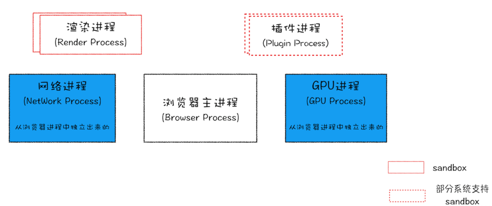

一、浏览器中的进程
 上图最新的 Chrome 浏览器架构图，从图中可以看出，最新的 Chrome 浏览器包括：1 个浏览器（Browser）主进程、1 个 GPU 进程、1 个网络（NetWork)进程、多个渲染进程和多个插件进程。① 浏览器进程（Browser 进程）
浏览器的主进程，负责主控、协调，只有一个（无论打开几个 tab 或几个弹窗）。
主要作用：
- 负责各个页面的管控，创建和销毁其他进程
- 将 Render 进程得到的内存中的 Bitmap，绘制到用户界面上
- 网络资源的下载、管理等
② GPU 进程
GPU（图形处理器）。
Chrome 刚开始发布的时候是没有 GPU 进程的，而 GPU 的使用初衷是为了实现 3D CSS 的效果，只是随后网页、Chrome 的 UI 界面都选择采用 GPU 来绘制，这使得 GPU 成为浏览器普遍的需求。最后，Chrome 在其多进程架构上也引入了 GPU 进程。
③ 插件进程
主要负责插件的运行。因为插件容易崩溃，所以需要通过插件进程来隔离，以保证插件进程的崩溃不会对浏览器和页面造成影响。
每种类型的插件对应一个进程，仅当使用该插件时才创建。
④ 网络进程
主要负责页面的网络资源加载，之前是作为一个模块运行在浏览器进程里面的，最近几年才独立出来，成为一个单独的进程。
⑤ 浏览器渲染进程（浏览器内核）
浏览器渲染进程（Render 进程），即通常说的浏览器内核。
主要作用：页面渲染、脚本执行、事件处理。
每个 tab 页的打开都会创建一个 Render 进程，并且互不影响 。默认一个 tab 页对应一个 Render 进程，但是有时候浏览器会将多个进程进行合并，例如打开了多个空白标签页。
浏览器为什么多进程的？
如果多个页面共享一个进程，那么在某个 tab 页崩溃时，将导致同进程中的其他页面也崩溃，及其影响用户体验。
而且进程之间不会共享资源和地址空间，所以不会存在太多安全问题。
当然，多进程相对于单进程而言，内存等资源的消耗更大。
二、浏览器内核中的线程
它包含一下5种线程：
① GUI 渲染线程（有且仅有一个）
负责渲染浏览器界面，解析 HTML、CSS，构建 DOM 树、RenderObject树，布局、绘制等。
当页面需要重绘或者回流时，此程序就会执行。
GUI 线程和 JS 引擎线程互斥！！！
当 JS 引擎线程执行时，GUI 线程就会被挂起（相当于被冻结了），GUI 更新会被保存在一个队列中，等到 JS 引擎空闲时，立即被执行。
为什么 JS 引擎执行的时候 GUI 线程要被挂起？
因为 JS 可以操作 DOM，如果可以在修改 DOM 的同时渲染页面，那么 GUI 渲染线性前后获得的元素数据就可能不一致。
② JS 渲染引擎（有且只有一个）
JS 引擎线程也称为 JS 内核，负责处理 JS 脚本程序，解析 JS 脚本，运行代码。
JS 引擎一直等待着任务队列中任务的到来，然后加以处理。
因为 GUI 线程和 JS 引擎线程互斥，因此 JS 加载时间过长时，会造成页面渲染不连贯，导致页面加载阻塞。这就是为什么建议将 <script> 标签写在 body 的最末端的原因。
③ 事件触发线程
事件触发线程归属于浏览器，而不属于 JS 引擎，JS 引擎处理的事务过多，需要浏览器开线程来进行协助。
JS 是采用事件驱动机制来响应用户操作的，事件触发进程是通过维护事件循环和事件队列等方式，来响应和处理事件。
当处理一些不能立即执行的函数或代码时，会将对应的任务在其可以触发的的时机，添加到事件队列的末端。
事件循环机制会在 JS 引擎空闲时，循环访问事件队列的头部，如果有函数或代码，则会将其推入执行栈中并立即执行。
④ 定时器触发线程（多个）
即 setInterval 与 setTimeout 所在的线程。
浏览器定时计数器并不是由 JS 引擎计数的，因为 JS 引擎是单线程的，如果处于阻塞线程状态就会影响计时器的准确性。
因此需要使用单独的线程来计时并触发定时器，计时完成后，添加到事件队列中，等待 JS 引擎空闲后执行。所以， 定时器中的任务在设定的时间不一定能够准时执行，定时器只是在指定的时间点将任务添加到事件队列中 。
注意：
W3C 在 HTML 标准中规定，定时器的定时时间不能小于 4ms，如果是小于 4ms，则默认为 4ms。
⑤ 异步 HTTP 请求线程（多个）
XMLHttpRequest 连接后，通过浏览器开一个新的线程进行请求。
检测到状态变更时，如果设置有回调函数，异步 HTTP 请求线程就会产生状态变更事件，将回调函数放入事件队列中，等待 JS 引擎空闲后执行。

Litchi
怕什么真理无穷，进一寸有一寸的欢喜